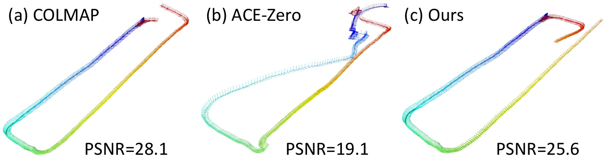
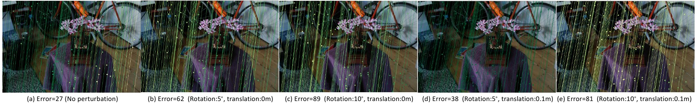
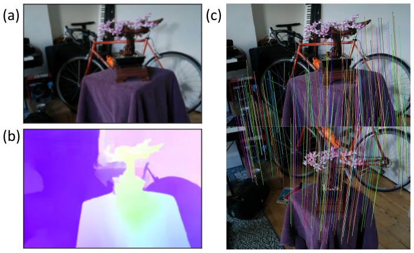
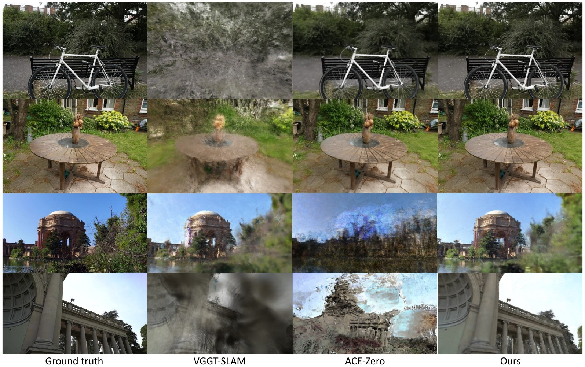
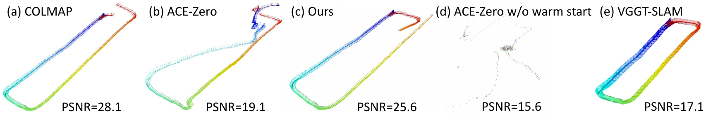
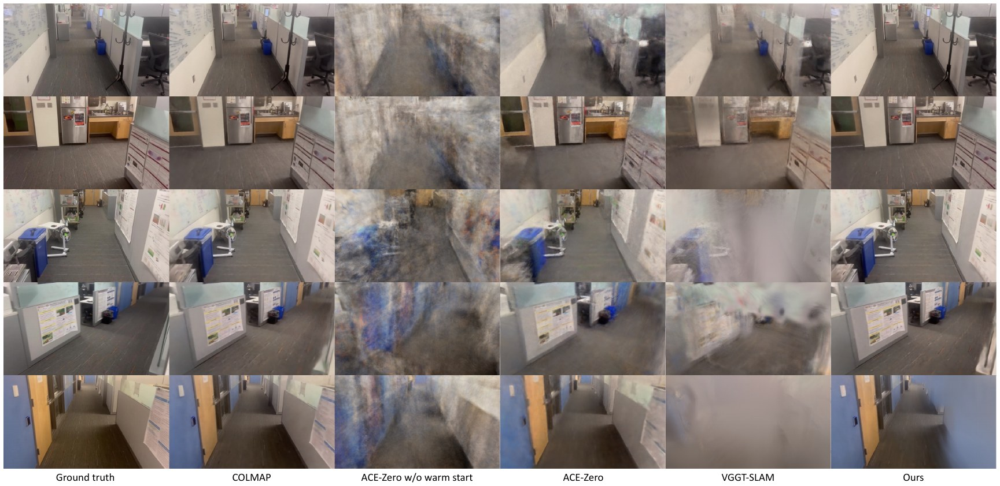
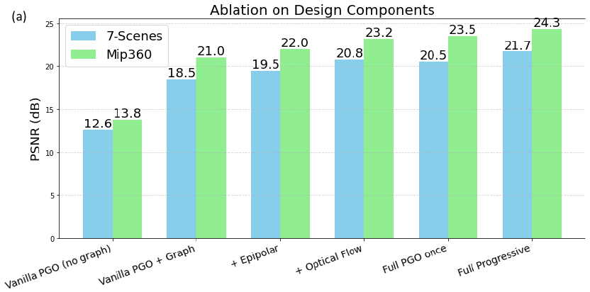
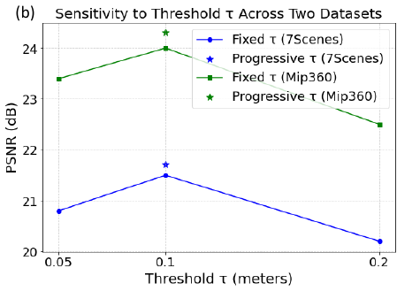
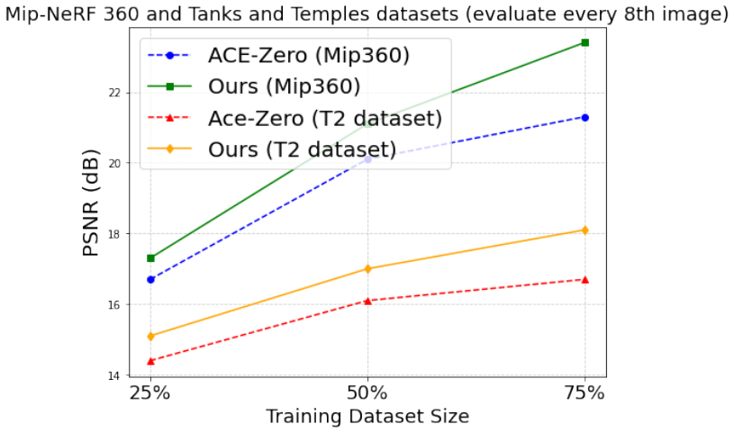
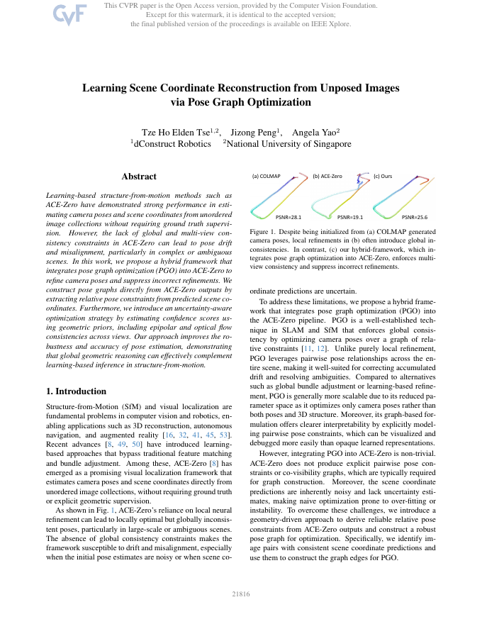

Learning-based structure-from-motion methods such as ACE-Zero have demonstrated strong performance in estimating camera poses and scene coordinates from unordered image collections without requiring ground truth supervision. However, the lack of global and multi-view consistency constraints in ACE-Zero can lead to pose drift and misalignment, particularly in complex or ambiguous scenes. In this work, we propose a hybrid framework that integrates pose graph optimization (PGO) into ACE-Zero to refine camera poses and suppress incorrect refinements. We construct pose graphs directly from ACE-Zero outputs by extracting relative pose constraints from predicted scene coordinates. Furthermore, we introduce an uncertainty-aware optimization strategy by estimating confidence scores using geometric priors, including epipolar and optical flow consistencies across views. Our approach improves the robustness and accuracy of pose estimation, demonstrating that global geometric reasoning can effectively complement learning-based inference in structure-from-motion.
ACE-Zero reconstructs a scene from unposed images by alternating between training a scene coordinate regressor and registering and refining camera poses. Its pose refinement is local: each pose is updated from information in its own image only, so errors can accumulate into drift. We add a global step to every ACE-Zero iteration.


The PGO step takes about 30 s per iteration, compared to about 150 s for an ACE-Zero iteration, but it roughly halves the number of iterations needed, so a full reconstruction takes less time than ACE-Zero.
We follow ACE-Zero and measure pose quality by novel view synthesis: each method's poses are used to train a Nerfacto model, and PSNR is computed on held-out views. COLMAP poses serve as the pseudo ground truth reference.
| Average PSNR (dB) ↑ | COLMAP | ACE-Zero | Ours |
|---|---|---|---|
| 7-Scenes | 21.2 | 21.2 | 21.7 |
| Mip-NeRF 360 | 24.7 | 22.9 | 24.3 |
| Tanks and Temples, short (150–500 images) | |||
| Training | 19.9 | 17.8 | 18.4 |
| Intermediate | 18.8 | 18.3 | 18.8 |
| Advanced | 17.3 | 14.5 | 16.8 |
| Tanks and Temples, long (4k–22k images) | |||
| Training | 19.8 | 19.3 | 19.7 |
| Intermediate | 19.9 | 19.6 | 20.3 |
| Advanced | 14.5 | 16.1 | 17.6 |
Bold marks the best result excluding COLMAP. COLMAP uses its default settings, except on the long Tanks and Temples videos, where it uses the settings recommended for large collections (on 7-Scenes these reach 21.8 dB). The paper reports per-scene results, VGGT-SLAM and DROID-SLAM baselines, and reconstruction times.






The code builds on ACE-Zero. The paper's results were produced with an internal pose graph optimizer that cannot be released, so the repository provides a re-implementation based on GTSAM, together with an extended pipeline and scripts to reproduce its results. It is distributed under the ACE-Zero license for non-commercial use.

@InProceedings{Tse_2026_CVPR,
author = {Tse, Tze Ho Elden and Peng, Jizong and Yao, Angela},
title = {Learning Scene Coordinate Reconstruction from Unposed Images via Pose Graph Optimization},
booktitle = {Proceedings of the IEEE/CVF Conference on Computer Vision and Pattern Recognition (CVPR)},
month = {June},
year = {2026},
pages = {21816-21825}
}
This work builds on ACE-Zero by Brachmann et al. This template was originally made by Phillip Isola and Richard Zhang for a colorful ECCV project; the code can be found here.